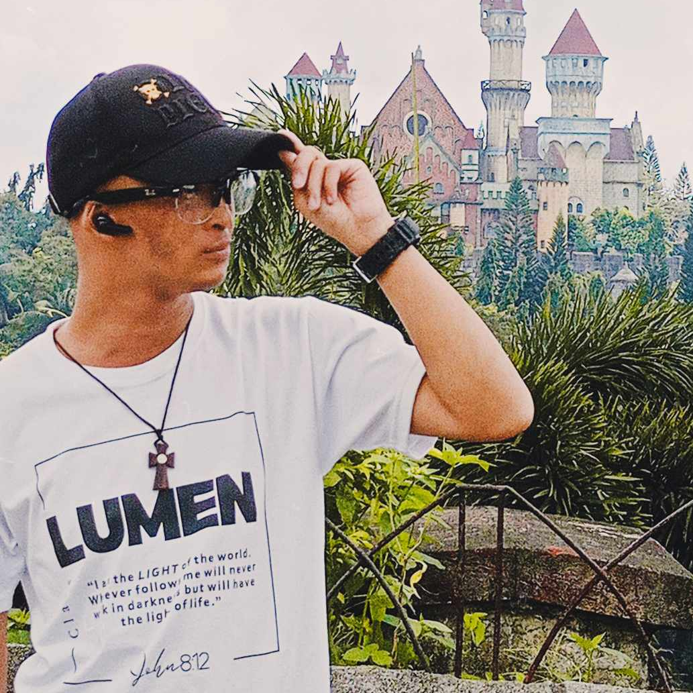

E - PORTFOLIO ON PERDEV BY: ASPEN LLOYD ANTE

ABOUT
Hello I am Aspen Lloyd M. Ante I'm 23 years old and a Grade 12 student. Yeah, I'm 23 but i'm still in senior high because of my health condition. My rare conditon called "HYPOHIDROTIC ECTODERMAL DYSPLASIA" (HED) or "Vampire Disorder". It is a rare inherited multisystem disorder that belongs to the group of diseases known as ectodermal dysplasias. For example, the ecodermal dysplasias often involve hair, teeth, nails, sweat glands, and/or skin. My mom said that at the time of my birth, my life is 50/50, which means either I die or will survive. Every occasion for me to celebrate has been stocked in the hospital because Im always sick. My father worked abroad since 1994, my parents got married in the year 1997. Till 2006, he used to work abroad even after marriage to financially support our daily needs and my maintenance due to my health condition. When I grew up, I felt different from others. I faced bullying since my appearance was not neat. Given up from a girl I liked due to my condition and looks. It is so hard to trust and accept people because that's an issue. And I realized when I grow up that God really has a plan on me. Yes it's tough being different from others, but it's not a hindrance for me to keep on going as long as my dreams keep me running. Yes, I have lots of differences from others, but I will do all my best for me to achieve my dreams!
ACADEMIC AWARDS
Grade 8 - Silver Medalist/ Multimedia Artist of the Year/ Creativity and Innovation Grade 9 - Bronze Medalist / Outstanding Behavior / Best Video Editor Grade 10 - Bronze Medalist / Environmental Stewardship Award / Perfect in Attendance Grade 11 - Most Creative Performance Award in MDA’s Got talent/ Perfect In Attendance
SKILLS
SINGING
75%
ARTS
80%
VIDEO EDITING
70%
DANCING
45%
PICTURES
.
TASKS IN PERSONAL DEVELOPMENT TERM 1
.
.
VIDEOS
LIVING MINDFULLY
.
REFLECTION
In my point of view, I knew myself a lot, but I realize that I was wrong because on our first activity "Self-Concept," I realized that my friends and classmates have different perceptions about me. In "Journal #1" I discovered that I genuinely don't know myself as I always tend to hide my real self since if people become aware of my short-tempered mentality they will leave me out since they hate my other side. Only my mom accepted me and used to love me even after she knew about the fact that I have mental issues due to my anxiety. In the activity # 2 "My Banner" I realized that I have many special things and achievements in my life that I forget because of my negativity in my heart. Through "My Own Success Stories", I think again about my future that I forgot because of my anxiety and because of this activity I created my new goal again in life to move forward and create something better than I write in the journal. On "Recipe of Success", I created a goal in life and that ingredient that I wrote is the key to my better future. Similarly, in "My personal Timeline, I look back on my past and remember my past achievements, how happy I was even during the difficult days. I think, therefore I am. mindful.In my "How mindful am I I" think critically and I answer how I react when I am in that situation like it is ok to say that to others or keep it quiet because we have different perspectives. In our last performance titled "Living Mindfully" It show us how to be mindful of a certain situation all the time like breath mindfully, listen deeply and be at peace, because this is the key to think more critically and stay positive even in the hard times. Yes we are tired in our everyday life but take a rest and move forward and try to do better. Lastly our Journal Reflections help us to think again about what we have today and think about our future. Having low self esteem may affect our future. That's why as early as possible we need to take action. I am the one who experienced anxiety and depression but this time I already surpassed it but I know in future Anxiety and depression will rise again and we need to be prepared because all of this activity will be trashed if we accept that we are lost in the fight of reality.
Contact Me
https://www.facebook.com/aspenlloyd.ante
Phone:+63 9089889484
Email: Aspenlloyd1022@gmail.com
.
REFLECTION
In my point of view, I knew myself a lot, but I realize that I was wrong because on our first activity "Self-Concept," I realized that my friends and classmates have different perceptions about me. In "Journal #1" I discovered that I genuinely don't know myself as I always tend to hide my real self since if people become aware of my short-tempered mentality they will leave me out since they hate my other side. Only my mom accepted me and used to love me even after she knew about the fact that I have mental issues due to my anxiety. In the activity # 2 "My Banner" I realized that I have many special things and achievements in my life that I forget because of my negativity in my heart. Through "My Own Success Stories", I think again about my future that I forgot because of my anxiety and because of this activity I created my new goal again in life to move forward and create something better than I write in the journal. On "Recipe of Success", I created a goal in life and that ingredient that I wrote is the key to my better future. Similarly, in "My personal Timeline, I look back on my past and remember my past achievements, how happy I was even during the difficult days. I think, therefore I am. mindful.In my "How mindful am I I" think critically and I answer how I react when I am in that situation like it is ok to say that to others or keep it quiet because we have different perspectives. In our last performance titled "Living Mindfully" It show us how to be mindful of a certain situation all the time like breath mindfully, listen deeply and be at peace, because this is the key to think more critically and stay positive even in the hard times. Yes we are tired in our everyday life but take a rest and move forward and try to do better. Lastly our Journal Reflections help us to think again about what we have today and think about our future. Having low self esteem may affect our future. That's why as early as possible we need to take action. I am the one who experienced anxiety and depression but this time I already surpassed it but I know in future Anxiety and depression will rise again and we need to be prepared because all of this activity will be trashed if we accept that we are lost in the fight of reality.
Contact Me
https://www.facebook.com/aspenlloyd.ante
Phone:+63 9089889484
Email: Aspenlloyd1022@gmail.com